december 4, 2025
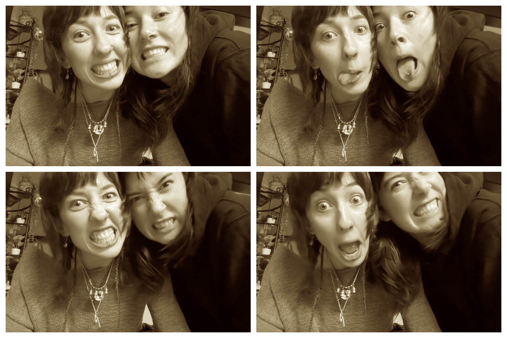
on my break at work and i am bored for the first time in a long time. nothing can help this i dont know where to put it. i forgot my book and youtube makes me feel queasy. in 11 days i will be on the way to my last final and in 11 days and 3 hours i will be at my birthday party! we are also going to mayne island on the 16th (my actual bday) with the princess of mayne island herself! miss claudia berns!! but for now i will try to keep up with the quickening days and remember that when it is all done there will be cake and dancing and beer.
november 29, 2025
saturday morning i love mornign i think a good morning is the best time of day. the morning is so whoelsome and young like a little infant of the day. and u can do anything with morning and its awesome cause its morning. like you can go for a very normal walk and say 'i went for a morning walk' or u can go for a very normal lunch and call it brunch. the worst thing is accidentally skipping morning or wasting it. i wish you could feel how good i feel right now.. it may be the coffee but me oh my this is a good day! ok now i have to finish up an assignment before work so goodbye.... i will write back when i finish (because i will i will i will finish it i promise myself). ok bye.
ok im not done yet but i fricking love tarifa by sharon van etten, it is so good when i listen to it i feel like i am falling and crying and laughing all at the same time.

WHY CANT I BE NORMAL SOMEONE PLEASE MAKE ME NORMAL ALL I HAVE EVER WANTED WAS TO BE NORMAL GIVE ME THE NORMAL PILL
november 21, 2025
2:05 am: hi stararararar ppppeeeeeeeooooooppllllllleeee. do u like it when i call u that?
life is like so fricking weird. like what do u mean?!
maybe i should actually talk about some substance instead of spraying gobbledy goop beta to the gooners 6767676767676767.
......
....ok now that i got it out of my system i can actually communicate: i am studying alone in rowans very quiet house listening to no music but the sound of the knight (and night) cars passing by. there is an animal crossing pomodoro 60/10 youtube video playing on the tv that is keeping me company. i plan to stay up late but idk how late. i at least know that i am not going to my classes tomorrow which is a rlly exciting idea. i love that idea. no class. only study. hmmmmmm.... its gonna be so cool and im gonna get so much work done and my mum is gonna be so proud of me :3
11:40pm: nighttime is all the time! it is hard to keep up with the days when the sun isnt there to follow. my back hurts, i dont know why. maybe from all the standing and sitting and laying i have been doing.
november 19, 2025
im too tall to marry
november 7, 2025
i am shaking but it is ok. it is a good shaking, like dogs after they get wet. im shaking it all out. in an hour i am going to be free and in two i am going to be with my mum. ain't that a lovely thought.
november 3, 2025
hi star person. the grilled cheese soup dimension i was talking about a couple days ago does exist and it is frankie's house. she read my tarot and it was rlly bad. it was saying stuff like bad things are coming and i cant do anything about it and it might be my own fault. but the advice was the queen of cups card which ill put a pic of below.


anyways we live and breathe and i have been wondering what this is all about and what am i supposed to do with all this. im embarrased and sad and anxious and angry all at once and it makes my stomach turn. i wanna go back and redo it all but i guess thats what memories are. idk man anyways sometimes i think if i think hard enough i can go anywhere i want to. like in my mind but thats not real but is it real? cause everything is just a controlled hallucination (at least thats what my mum says). ok thats enough... goodbye star person.. thats you! yes im talking to you. no one else just you. i miss you! goodbye
october 30, 2025
upadte everything is still not ok. but this is not my snapchat private story in 2018 so ill keep the details to myself. i just took two extra strength advil which im not supposed to do but i did it anyway. yolo. sometimes i imagine me tripping on the sidewalk and a black hole opening up and swallowing me and then it closes like nothing ever happened. and then i get to live underground or in another dimension for a bit where school doesnt exist and someone takes care of me and feeds me grilled cheese and tomato soup and tells me that everything is going to be ok. i finished my book today. im not going to tell you which one but it turns out she was dead the whole time. and he divorced his wife. im sad it ended i was beginning to like the old bald man.
october 29, 2025
everything is bad. everything is horrible. i havent slept well in a many many moons. i have a pretty good track record of strangers talking to me right when im about to crash out, which just happened again. i look like shit today, my hair is so gross, my face is all puffy and im wearing the grossest sweater in the world. but it is ok i am going to let it all go now. phwoosh! there it goes into the wind.
october 20, 2025
i have been having some instagram nostalgia..... i miss that beautiful wonderland of content...... so i thought in honour of instagram i will do a fake instagram post right here for all my followers to see:
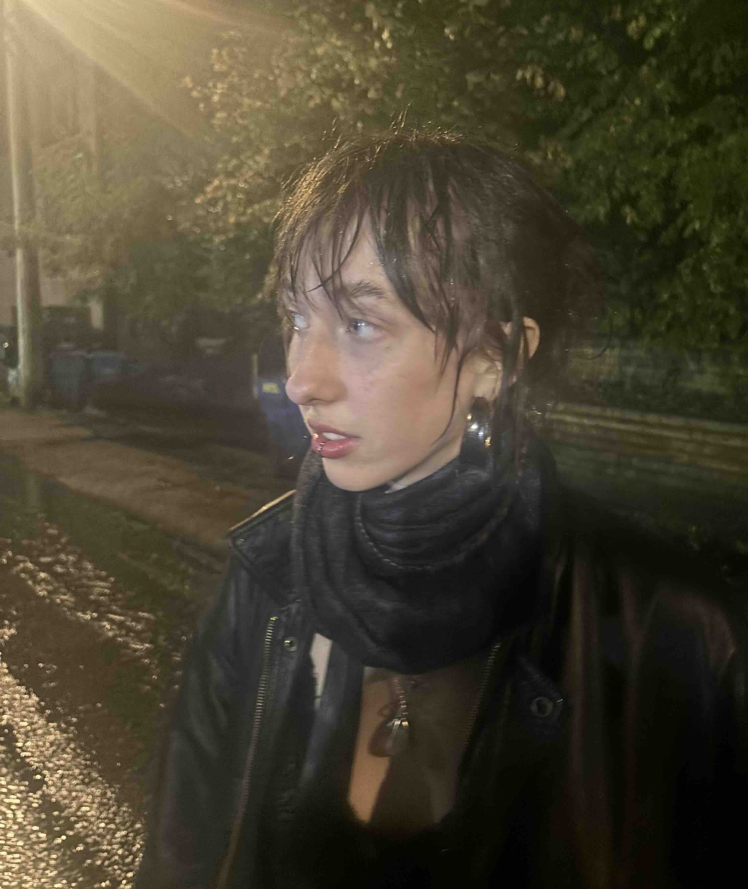
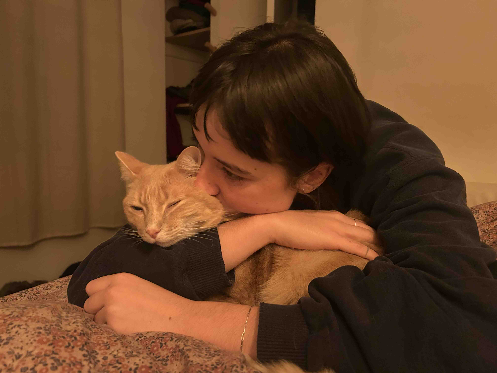
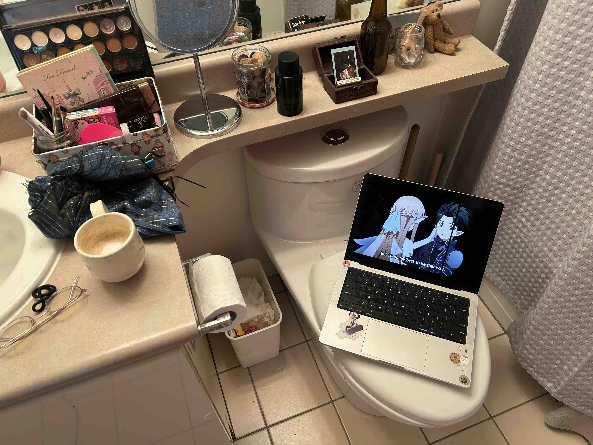
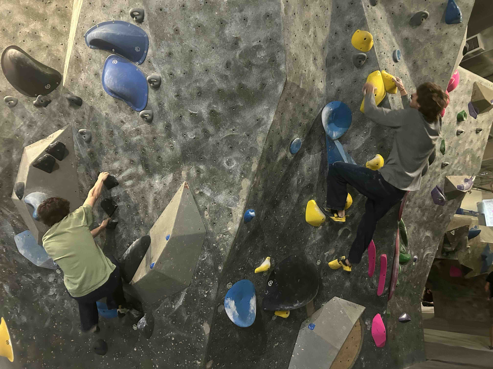
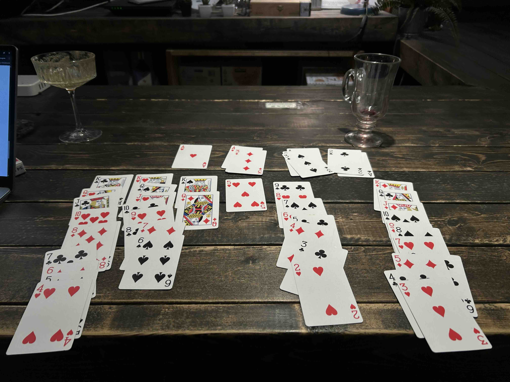
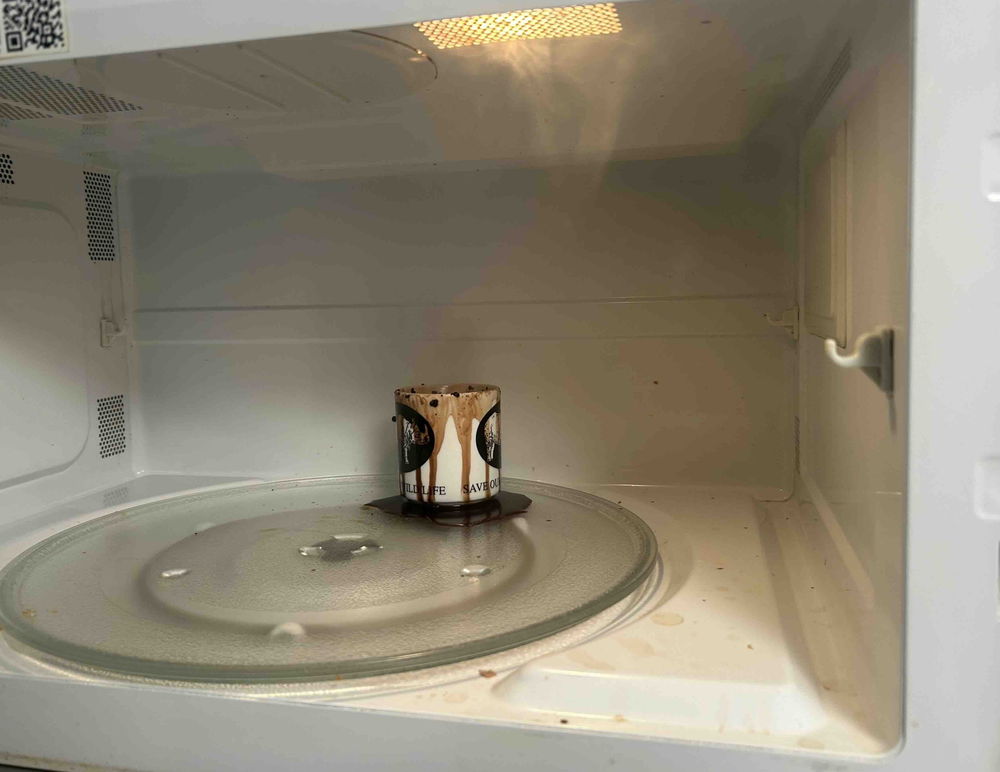
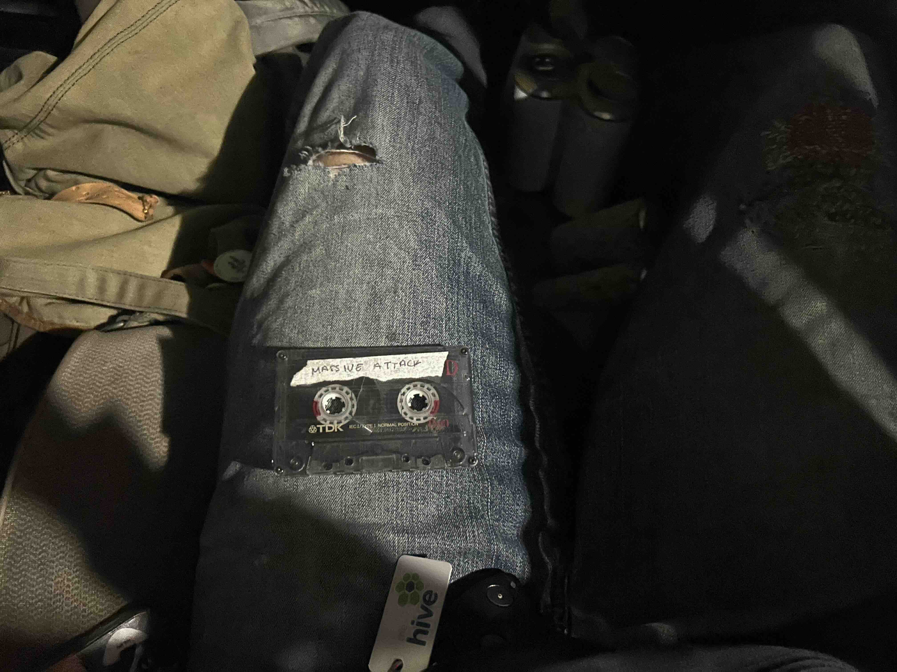
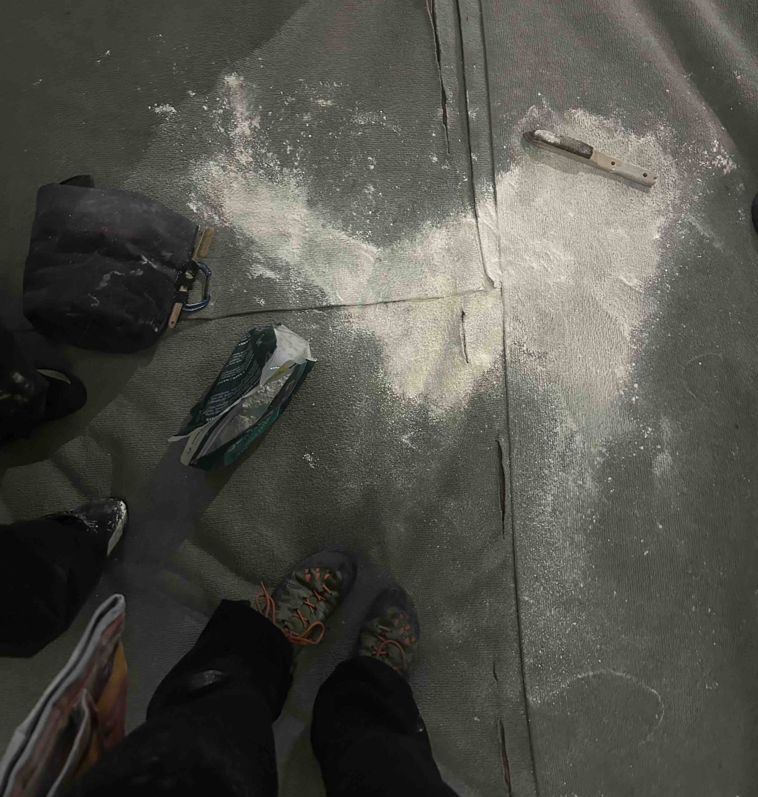
f4rrr3n he is the falling orange leaves, he is the wind that has blown them, he is the grass, dying, he is everywhere but here.
^^^ i would probably caption it something cryptic asf just cause and maybe slap some song over it. for this one i would maybe do 'sometimes' by my bloody valentine. i recently rewatched lost in translation on 123movies and it was literally 2 pixels by 2 pixels but it was enough to experience the general feeling of the movie which did include said song.
i know u didnt ask but i am going to explain the contexts of every photo: 1) when me and rowan went out and we needed to go on a walk away from the people cause she was overstimulated and in the alley after we both peed she said 'STOP! let me take a picture' 2) rowan and webster. we were in frankie's bed right after her mom fed us the biggest nutritional meal in the whole world. 3) getting ready while watching sword art online. 4) fynn and eli warming up on the wall together (wholesome) 5) my won game of solataire while amelie booked her flight to berlin. 6) exploded hot chocolate espresso mix. never trust a microwave to do a stove's job. 7) tape i liked in fynn's car (ol' faithful). 8) spilt chalk bag after a dude flew off the wall ontop of me and polina.
october 12, 2025
i am home and i am so happy. i love my mum. we talk and talk and talk and talk about everything under the sun and she makes me oatmeal in the morning and we run errands. it was snowing when i woke up today which is so very saskatchewan, it was 23 degrees and sunny yesterday. the weather is so dramatic here unlike vancouver. vancouver it is like a dull knife in the winter, here it is sharp and quick. when i got here a couple nights ago i cried and cried and cried. i am even crying right now. i miss pumpkin so much. he was the only true and good thing in this world. i have so much love for him and i dont know where to put it now. it is so overwhelming.
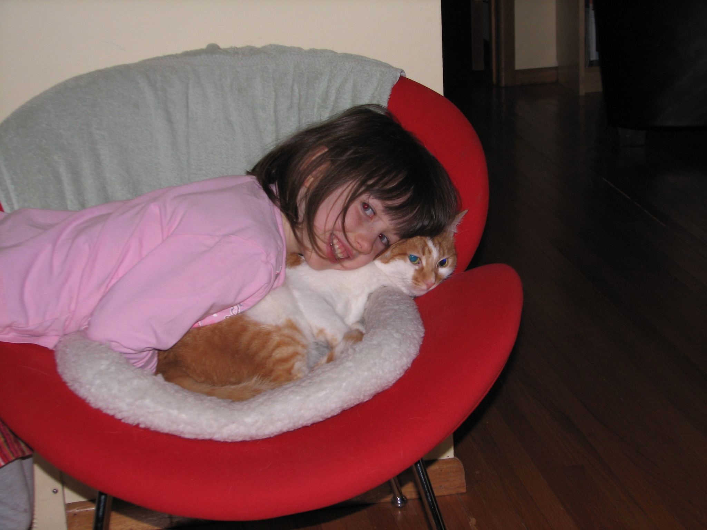
october 7, 2025
when i sleep i dream i am falling through the sky in my mothers arms and everything is okay. i dream of the time i was woken by love. i dream of home. when i wake now it is to an empty fridge and cold fingertips.
look here:

also here:


i am eating a very big apple that i sliced into very thin pieces. i have always liked my apples this way. the thinner the slice the better. anyways while i was cutting my apple in the kitchen a small gathering, fiesta, get together, whatever u call it was taking place around me. on a tuesday night?? it was refreshing and a weird contrast to the solace of my room. i finished my apple cutting and did a symbolical curtsy to the crowd and when i got back to my room a wave of comfort and relief washed over me. not a relief like i was escaping a bad environment. more like i have reached belonging that i cannot find in any other room. i think thats why i have certain relationship issues, my solitude is so sacred i cannot give a drop of it up. i think also the wave of comfort could be due to the fact that i recently started putting the heating on in my room or that i just burnt my fav incense. either way it was rather pleasant. i caught a new angle of myself in the mirror earlier today. i was like a deer maybe. with a halo? a halo of stars perhaps. i checked the analytics of this site and it was rather scary... i forget that this is on the internet for everyone and their moms to see and what troubles me the most is that i always forget who i tell about it. anyways it said that people in russia and sweden and all these random countries have visited. i guess star people are everywhere! like 20 people have been here in the past 24 hours like this has to be cap. im calling cap! cap! cap! cap!
september 30, 2025
i am in aperture jazz coffee bar thingy. i havent been here in a while. i need to do a lot of work on a project today. by a lot of work i mean try to finish it. but i dedicated the whole day to it so i am hopeful. i am listening to the charlie brown christmas movie soundtrack because it reminds me of my mum and its her birthday today. happy birthday mum! a guy probably in his 50s smiled at me while i walked up to grab my awesome decaf flat white. i cant help but assume the worst and i hate that. but would he have smiled at another man his age? or a woman his age? like i hate to be like 'man is being nice to me he must be a creep' but i find it really hard not to think me being a young woman has something to do with it. i love my mum so much so much so much u guys dont even understand she is the best ever i miss her so much. im going home for thanksgiving and its just gonna be her and i and im so excited.
september 28, 2025
it is raining it is raining and i am sitting here waiting for it to pass. gaia doesnt like it when i turn on all the lights but i am scared of the dark.
september 25, 2025
i refuse to be sad. i am channeling my inner boy and in beast mode 24/7. and beast mode is drain gang and climbing and wearing the same jeans 5 days in a row.
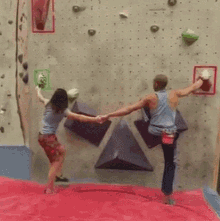
me and gaia at the hive tmo im so excited #wholesomeseptember 23, 2025
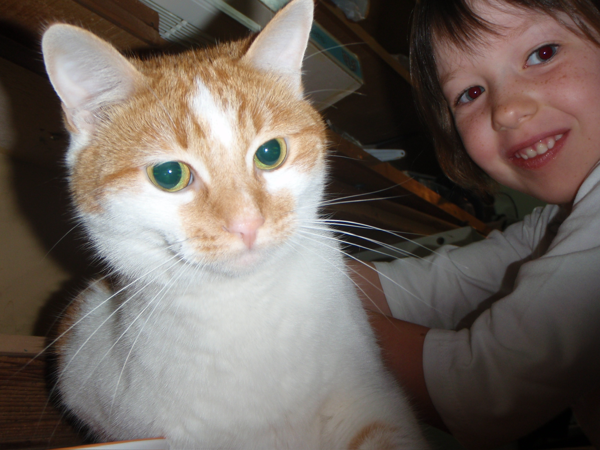
RIP to the goat pumpkin. i love u to the moon and back one million billion trillion quadrillion times.
september 22, 2025
hai :3 at the freaking north van hive w da gang. life is like that one drone shot of hawaii.